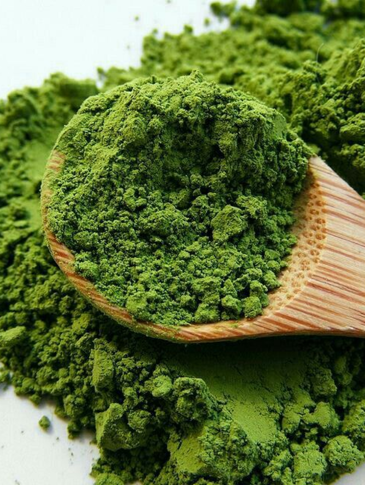

МАТЧА користується популярністю через ряд факторів, які поєднують унікальний смак, потужність антиоксидантів. А також це про:
Смак і Аромат: Матча має насичений, багатий смак з легкою гіркотою та ароматом.
Здоров'я та Антиоксиданти: Матча вважається одним з найдієвіших напоїв, оскільки вміст антиоксидантів в ньому вищий, ніж у звичайних зелених чаїв.
Енергетичний Заряд: Матча містить теанін, амінокислоту, яка може забезпечити поміркований енергетичний заряд.
Традиційність та Ритуал: Матча є ключовою частиною японської традиції чаювання.